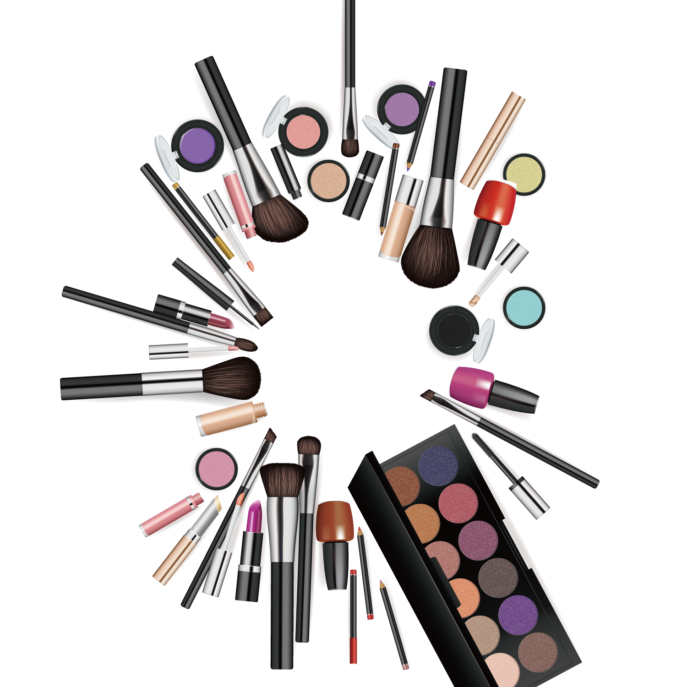

Тушь
Один из самых популярных продуктов в категории декоративной косметики - тушь для ресниц. Не удивительно, ведь подчеркнуть и выделить глаза хотят даже те, кто предпочитает обходиться без макияжа.
Хайлайтер
Хайлайтер стал широко использоваться в макияже не так давно, но продолжает набирать обороты популярности. Он позволяет сделать макияж более ярким, освежить лицо, подчеркнуть и скорректировать определенные его части.
Бронзер
Если хотите мгновенно придать лицу легкий загар или выделить скулы, вам поможет бронзер. Рассказываем, как выбрать оттенок, кисть и куда наносить средство